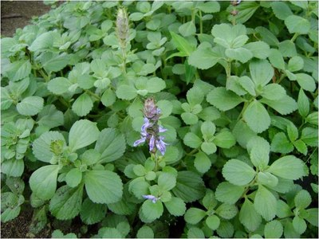

O que são ervas medicinais?
As ervas medicinais são plantas que possuem propriedades terapêuticas e são utilizadas na medicina tradicional e alternativa.
Benefícios das ervas medicinais
Podem ajudar no tratamento de diversas doenças. Possuem menos efeitos colaterais em comparação com medicamentos sintéticos. Podem ser utilizadas em chás, tinturas, óleos e outros preparados.
Indicada para acalmar, combater insônia e aliviar problemas digestivos.
Possui ação estimulante, antioxidante e pode ajudar na queima de gordura.
Utilizado para melhorar a digestão, aliviar cólicas e gases.
Conhecida por propriedades anti-inflamatórias e calmantes. Deve ser usada com cautela.
Indicada para problemas digestivos e como calmante natural.
Excelente para o fígado e problemas digestivos.
Conhecida por suas propriedades anti-inflamatórias e usada tradicionalmente no tratamento de dores musculares e articulares.
Utilizada na medicina popular como cicatrizante e também em infecções urinárias e problemas respiratórios.

Usada para controle da diabetes e como diurético natural.
Rico em vitaminas e usado no tratamento de tosse, bronquite e problemas respiratórios.